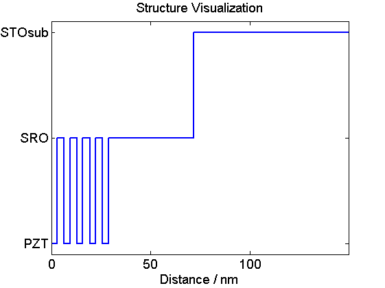

Structure From XML Example
In this example we show how to build a sample structure from a given XML file. The use of XML files allows to easily exchange sample structures and have a clean code for the upcoming simulations.
Be sure to include all folders of the udkm1dsim toolbox to your MATLAB search path. Especially the /parameters and /helpers folders with all their subfolders.
Contents
here we clear the workspace and close all figures
clear all; close all; % these are some units and constants we can use later on u = units; const = constants;
Content of Structure XML File
First of all we display the content of the XML file. You should read the comments in the file carefully. Generally, building structures in a MATLAB script or from an XML file is not much different.
type('sample.xml');
<?xml version="1.0" encoding="utf-8"?>
<!-- You have to provide all constants in SI units. -->
<!-- The ordering of the attributes does not matter, but they are case sensitive! -->
<sample name="Sample From XML">
<!-- initilize atoms and mixed atoms -->
<atoms>
<!-- required: symbol - optional: ID, ionicty -->
<atom symbol="O" />
<atom symbol="Sr" ID="Sr" />
<atom symbol="Ti" ionicity="0" />
<atom symbol="Ru" ID="Ru" ionicity="0" />
<atom symbol="Pb" />
<atom symbol="Zr" />
<!-- required: symbol - optinal: ID, name -->
<atomMixed symbol="ZT" ID="ZT" name="Zircon-Titan 0.2 0.8">
<!-- required: ID, fraction -->
<atom ID="Zr" fraction="0.2" />
<atom ID="Ti" fraction="0.8" />
</atomMixed>
</atoms>
<!-- build the unit cells -->
<unitCells>
<!-- required: name, ID, cAxis - optinal: aAxis, bAxis, debWalFac, soundVel, optPenDepth, thermCond. linThermExp, heatCapCoeffs -->
<unitCell name="SRO" ID="SRO" cAxis="3.948e-10" aAxis="3.905e-10" bAxis="3.905e-10" debWalFac="0" soundVel="6312" optPenDepth="43.8e-9" thermCond="5.72" linThermExp="@(T)(-4.16e-6+5.86e-8.*T-7.78e-11.*T.^2+3.41e-14.*T.^3)" heatCapacity="@(T)(455.2 + 0.112.*T - 2.1935e6./T.^2)">
<!-- add atoms at relative positions -->
<atom ID="O" position="0" />
<atom ID="Sr" position="0" />
<atom ID="O" position="0.5" />
<atom ID="O" position="0.5" />
<atom ID="Ru" position="0.5" />
</unitCell>
<unitCell name="PZT" ID="PZT" cAxis="4.1315e-10" aAxis="3.905e-10" bAxis="3.905e-10" debWalFac="0" soundVel="4145" optPenDepth="Inf" thermCond="1" linThermExp="-1.5e-5" heatCapacity="@(T)(733.73 + 0.0248.*T - 6.531e6./T.^2)">
<atom ID="O" position="0" />
<atom ID="Pb" position="@(strain)(0.089888*sqrt((strain+0.0414)/0.0414))"/>
<atom ID="O" position="0.5" />
<atom ID="O" position="0.5" />
<atom ID="ZT" position="@(strain)(0.5*(strain+1)+0.057375*sqrt((strain+0.0414)/0.0414))" />
</unitCell>
<unitCell name="STOsub" ID="STOsub" cAxis="3.905e-10" aAxis="3.905e-10" bAxis="3.905e-10" debWalFac="0" soundVel="7800" optPenDepth="Inf" thermCond="12" linThermExp="1e-5" heatCapacity="@(T)(733.73 + 0.0248.*T - 6.531e6./T.^2)">
<!-- required: ID, position - optinal: handle -->
<atom ID="O" position="0" />
<atom ID="Sr" position="0" />
<atom ID="O" position="0.5" />
<atom ID="O" position="0.5" />
<atom ID="Ti" position="0.5" />
</unitCell>
</unitCells>
<!-- build the structure out of substructres and layers -->
<structure>
<!-- required: N , unitCellID / name -->
<!-- substructures can be either unit cells or a structure itself -->
<substructure name="double layer" N="5">
<substructure unitCellID="PZT" N="7" />
<substructure unitCellID="SRO" N="9" />
</substructure>
<substructure unitCellID="SRO" N="100" />
<substructure unitCellID="STOsub" N="200" />
</structure>
<!-- add a static substrate to the sample structure -->
<!-- required: unitCellID, N -->
<substrate unitCellID="STOsub" N="100000" />
</sample>
Load the Sample Structure
The name of the structure is overwritten from the XML file. So the only necessary parameter is the path to the XML file we want to load.
S = structure('', './sample.xml');
Building Sample: Sample From XML from File Loading Atoms into Workspace... ... Atoms loaded! Loading UnitCells into Workspace... ... UnitCells loaded! Building Substructures ... ... Substructures built! Substrate added!
display the properties of the structure and visualize
S.disp();
Structure properties: Name : Sample From XML Length: 149.81 nm ---- SubStructure 5 times: Structure properties: Name : double layer Length: 6.45 nm ---- 7 times PZT: 2.89 nm 9 times SRO: 3.55 nm ---- 100 times SRO: 39.48 nm 200 times STOsub: 78.10 nm ---- Substrate: ---- 100000 times STOsub: 39050.00 nm
S.visualize();
More Structure Methods
In order to access the different unit cells in the structure we can first display the internal nummeration of the unit cells in the structure:
disp(S.getUniqueUnitCells);
'PZT' [1x1 unitCell]
'SRO' [1x1 unitCell]
'STOsub' [1x1 unitCell]
Now we can also retrieve all positions per unique unit cell in the structure by simply asking for the cell array:
Pos = S.getAllPositionsPerUniqueUnitCell(); % Each cell of this array is linked to the above retrieved unique unit % cells. Accordingly the first entry gives all positions of the PZT unit % cell in the structure: disp(Pos{1});
1
2
3
4
5
6
7
17
18
19
20
21
22
23
33
34
35
36
37
38
39
49
50
51
52
53
54
55
65
66
67
68
69
70
71
You can easily access the properties of a unit cell by its index by simply typing:
disp(S.getUnitCellHandle(10).name); disp(['mass: ' num2str(S.getUnitCellHandle(10).mass/u.kg) ' kg']);
SRO mass: 3.9303e-25 kg